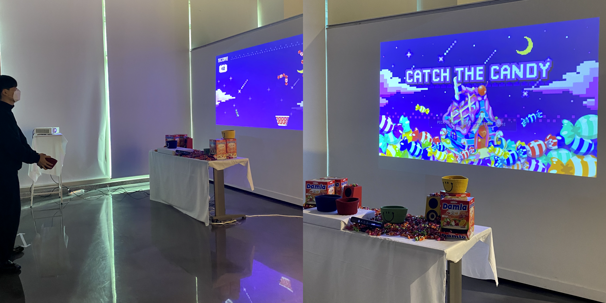

Subin Park
UXUI DESIGN
INTERACTIVE
감각의 작용
부산대학교 Design&Technology 전공 졸업전시회 개인 프로젝트로 인터렉티브 아트를 제작하였습니다.
공간에서 마주한 사용자는 눈 앞의 박스를 터치함으로 떠오르는 감각을 통해 반응하게됩니다.
팀원 구성: 기획, 디자인, 개발 총 1명(본인)
프로젝트 기간: 2021.03-10
